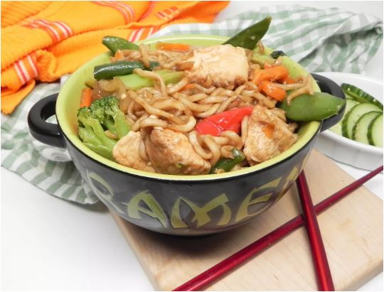

Chicken Stir-Fry with Ramen Recipes

Description
Stir-fried ramen with chicken or your choice of meat. you can use chopsticks to cook this with. Makes it super easy.
Ingredients
Steps
- Place ramen noodles in a bowl. Set seasoning packet aside. Pour boiling water over noodles until they are submerged; set aside while you start the stir-fry.
- Heat 1 tablespoon sesame oil in a frying pan over medium-high heat, swirling to coat the entire pan. Add chicken and stir to coat with oil. Add oyster sauce and 1 tablespoon soy sauce. Stir-fry chicken until no longer pink and juices run clear, 7 to 10 minutes.
- Add frozen vegetables. Cover, reduce heat to medium, and let steam until heated through and soft, about 5 minutes. Add ginger and 1 teaspoon minced garlic; stir-fry until fragrant, about 1 minute. Transfer mixture to a serving bowl.
- Drain softened ramen noodles, reserving 2 tablespoons soaking water.
- Heat remaining sesame oil in a pan over medium heat. Add reserved soaking water along with 1/2 of the ramen seasoning packet, remaining soy sauce, remaining garlic, and chili powder. Add ramen noodles; cook and stir constantly until coated and water has evaporated, 2 to 3 minutes.
- Transfer to serving bowls and top with chicken and vegetable mixture.